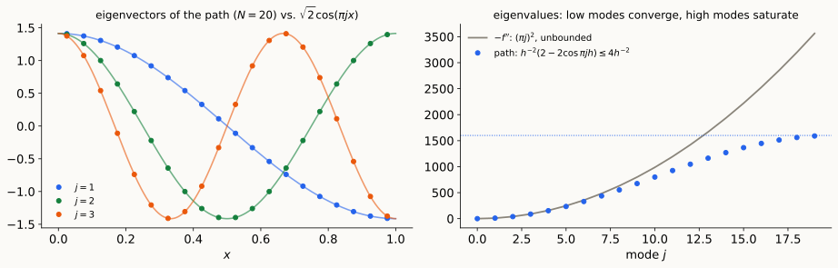
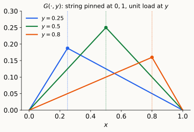
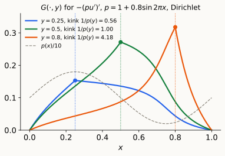
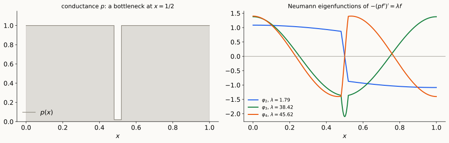
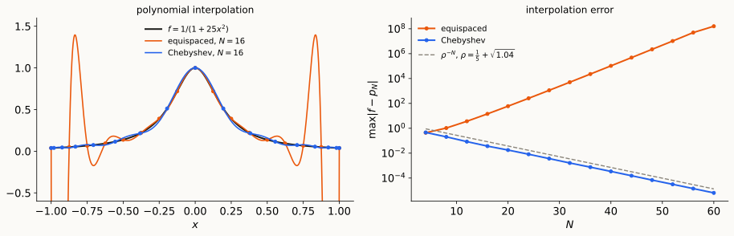
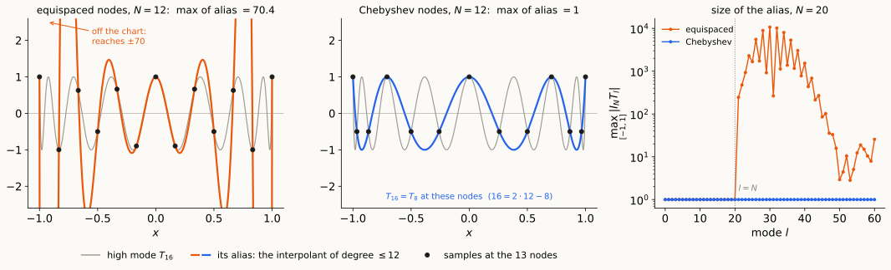
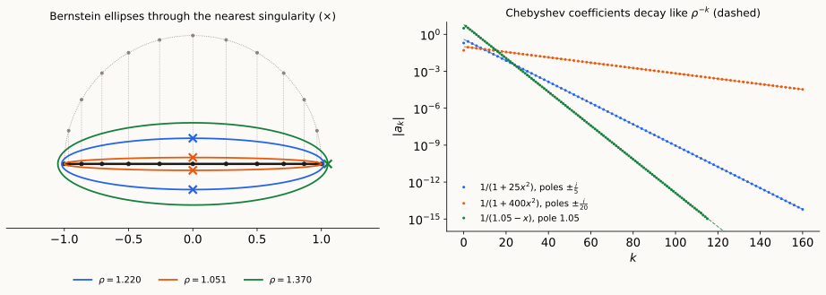
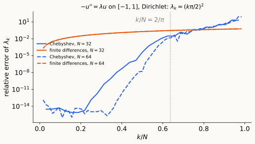
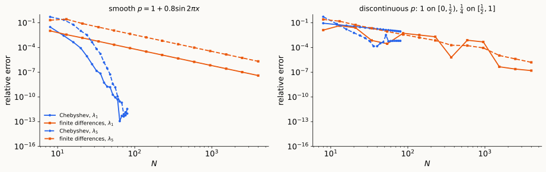

The continuum limit of the weighted path, the spectral theory of second-order operators on an interval,
and computing their spectra with Chebyshev points
Today: the simplest case, one dimension. The weighted path graph becomes a Sturm–Liouville operator \(-(pf')'+qf=\lambda rf\), whose spectral theory is as complete as that of a symmetric matrix.
\(N\) cells of width \(h=\frac1N\) on \([0,1]\), centers \(x_i=(i-\frac12)h\), edge weights \(h^{-2}\) (Lecture 2 notes): \[(Lf)_i=\frac{2f_i-f_{i-1}-f_{i+1}}{h^2}\ \longrightarrow\ -f''(x_i).\]
The limit operator is the linear differential operator \(T_N=-\frac{d^2}{dx^2}\) (\(N\) for Neumann) on the space of twice-differentiable functions on \([0,1]\) (precisely: \(u''\in L^2\)) satisfying the Neumann boundary conditions \(u'(0)=u'(1)=0\). It has a complete set of eigenfunctions \(\cos(\pi jx)\) with eigenvalues \((\pi j)^2\), \(j=0,1,2,\dots\).

Path (drop the factor \(h^{-2}\))
Bulk (rows \(2\le i\le N-1\)): the stencil is translation invariant, so every frequency \(\theta\) works: \[\begin{aligned}&f_i=\cos\big(\theta(i-\tfrac12)\big)\\ \Rightarrow\ &2f_i-f_{i-1}-f_{i+1}=(2-2\cos\theta)\,f_i\end{aligned}\]
Boundary (rows \(1\), \(N\)): bulk rows with ghost values \(f_0=f_1\), \(f_{N+1}=f_N\) (discrete Neumann).
Continuum (\(T_N=-\frac{d^2}{dx^2}\))
Bulk (the ODE on \((0,1)\)): the equation is translation invariant, so every frequency \(\omega\) works: \[\begin{aligned}&u=A\cos\omega x+B\sin\omega x\\ \Rightarrow\ &{-u''}=\omega^2u\end{aligned}\]
Boundary (Neumann \(u'(0)=u'(1)=0\)):
Bulk gives the eigenvalue (\(2-2\cos\theta\) vs. \(\omega^2\), equal to leading order when \(\theta=\omega h\)); the boundary picks the frequencies (\(\theta=\pi jh\) vs. \(\omega=\pi j\)). So \(\ \varphi_j(x_i)=\cos(\pi jx_i)\), \(\ \mu_j=h^{-2}(2-2\cos\pi jh)\), \(\ j=0,\dots,N-1\): \(N\) distinct eigenvalues, a complete basis (the DCT).
Folding: reflect the path across both ends to get the cycle \(C_{2N}\) (Lecture 2 notes, §6.2). Even functions on \(C_{2N}\) = functions on the path, and the even Fourier modes are the cosines. Continuum: cosine series on \([0,1]\) = Fourier series of the even extension to the circle of length \(2\).
The limit operator \(-\frac{d^2}{dx^2}\) on \(L^2([0,1])\) (LA Review II, §8):
Task: given \(f\), solve \(\ -u''=f,\ \ u(0)=u(1)=0\).
1. Integrate twice from \(0\). \[u'(x)=u'(0)-\int_0^x f(s)\,ds,\] \[u(x)=u(0)+u'(0)\,x-\int_0^x(x-s)\,f(s)\,ds,\] using \(\int_0^x\!\int_0^t f(s)\,ds\,dt=\int_0^x(x-s)f(s)\,ds\) (swap the order).
2. The boundary values fix the two constants. \(u(0)=0\), and \(u(1)=0\) forces \(\ u'(0)=\int_0^1(1-s)f(s)\,ds\).
3. Read off the kernel. Splitting at \(s=x\): \[\begin{aligned}u(x)&=\int_0^1\underbrace{x(1-s)}_{\text{from }u'(0)}f(s)\,ds-\int_0^x(x-s)f(s)\,ds\\&=\int_0^1G(x,s)f(s)\,ds,\end{aligned}\] \[G(x,s)=\begin{cases}s(1-x),&s\le x\\ x(1-s),&s\ge x\end{cases}\ =\ \min(x,s)-xs.\]
4. Check. \(u=(1-x)\int_0^x sf+x\int_x^1(1-s)f\). Differentiate twice: the boundary terms cancel, and \(-u''=f\).

What we gained. \(G\) is continuous and symmetric, so \(T_D^{-1}f=\int G(\cdot,s)f(s)\,ds\) is bounded, self-adjoint, compact. Its eigenpairs are \(\big(\frac{1}{(\pi j)^2},\sin\pi jx\big)\). Sanity check: \(\operatorname{tr}T_D^{-1}=\int_0^1G(x,x)\,dx=\frac16=\sum_j\frac1{(\pi j)^2}\).
On \([a,b]\), with \(p\in C^1\), \(p>0\), and \(r>0\), \(q\) continuous: find \(\lambda\) and \(f\ne0\) with \[-(pf')'+qf=\lambda\,rf,\] plus separated boundary conditions \(\ \alpha_af(a)+\beta_ap(a)f'(a)=0\), \(\ \alpha_bf(b)+\beta_bp(b)f'(b)=0\) (regular problem).
Theorem. For a regular Sturm–Liouville problem:
Task: given \(f\), solve \(\ \mathcal Lu:=-(pu')'+qu=f\) with both boundary conditions. Assume \(0\) is not an eigenvalue (a shift arranges this, next slide). Idea: as for the tent, find the response to a unit point load, \(\mathcal L\,G(\cdot,y)=\delta_y\), then superpose: \(u=\int G(\cdot,y)f(y)\,dy\).
0. One solution per endpoint. Solve \(\mathcal Lu=0\) from each end: \(u_a\) with \((u_a,\,pu_a')(a)=(\beta_a,-\alpha_a)\) satisfies the condition at \(a\); \(u_b\) likewise at \(b\). (Linear ODE: they exist.)
1. Ansatz. Away from \(y\), \(G\) solves \(\mathcal LG=0\), with the condition at \(a\) on the left and at \(b\) on the right: \[G(x,y)=\begin{cases}A(y)\,u_a(x),&x<y\\ B(y)\,u_b(x),&x>y.\end{cases}\]
2. Match at \(x=y\): continuity, and a unit jump in the flux \(pG'\) (integrate \(-(pG')'=\delta_y\) across \(y\)): \[A\,u_a(y)=B\,u_b(y),\qquad p(y)\big(B\,u_b'(y)-A\,u_a'(y)\big)=-1.\]
3. Solve: \(\ A=\dfrac{u_b(y)}C,\ \ B=\dfrac{u_a(y)}C\), so \[G(x,y)=\frac{u_a(x_<)\,u_b(x_>)}{C},\qquad C=p\,(u_a'u_b-u_au_b').\]

Simplicity. If \(f,g\) are eigenfunctions for the same \(\lambda\), both satisfy the boundary condition at \(a\), so their Wronskian vanishes there; \(p\,(fg'-f'g)\) is constant (Abel), so it vanishes everywhere: \(f\propto g\). (Fails in higher dimensions and on graphs: multiplicities.)
Min–max (Courant–Fischer, as in LA Review I): \[\lambda_k=\min_{\dim S=k}\ \max_{f\in S\setminus0}\ R(f),\qquad R(f)=\frac{\int pf'^2+qf^2}{\int rf^2}.\]
Sturm comparison. Let \(-(pu')'+qu=\lambda ru\) and \(-(pv')'+qv=\mu rv\) with \(\mu>\lambda\). Between any two consecutive zeros of \(u\) there is a zero of \(v\).
Proof. Let \(x_1<x_2\) be consecutive zeros of \(u\), with \(u>0\) on \((x_1,x_2)\), and suppose \(v>0\) there. Then \[\Big[p\,(u'v-uv')\Big]_{x_1}^{x_2}=(\mu-\lambda)\int_{x_1}^{x_2}r\,u\,v\ >\ 0,\] but the left side is \(p(x_2)u'(x_2)v(x_2)-p(x_1)u'(x_1)v(x_1)\le0\) since \(u'(x_2)\le0\le u'(x_1)\). \(\square\)
For large \(\lambda\), freeze the coefficients near a point \(x_0\): \(\ -p(x_0)\,u''\approx\lambda\,r(x_0)\,u\). (Where did \(q\) go? Discussion question 5.)
Travel time. A string with tension \(p\) and density \(r\) carries waves at speed \(c=\sqrt{p/r}\), so \(\int\sqrt{r/p}=\int dx/c\) is the time to cross it. The high modes hear only this. \(\lambda_2\) hears the global layout: the total resistance \(R=\int dx/p\) and where the mass \(M=\int r\) sits along it (\(\lambda_2\ge\frac{4}{RM}\), nearly tight for a bottleneck, next section).
Discretize: edge \((i,i+1)\) gets conductance \(c_{i+\frac12}=\frac{p(x_{i+1/2})}h\), vertex \(i\) gets mass \(m_i=r(x_i)\,h\): \[\sum_ic_{i+\frac12}(f_{i+1}-f_i)^2\approx\int pf'^2,\qquad\sum_im_if_i^2\approx\int rf^2 .\]
| weighted path graph | Sturm–Liouville |
|---|---|
| vertex measure \(m_i\) (degrees, \(\pi\)) | density \(r(x)\) |
| conductance \(c_{i+\frac12}\) | coefficient \(p(x)\) |
| edges to ground | potential \(q\) / Dirichlet condition |
| no boundary term (Neumann built in) | boundary conditions = self-adjoint extension |
| \(M^{-1}K\) (\(=L_{rw}\) for \(m=d\)) | \(\frac1r\big(-(p\,\cdot\,')'+q\big)\) |
| end-to-end \(R_{\rm eff}=\sum_i\frac1{c_{i+1/2}}\) | \(\int_a^b\frac{dx}p\) |
| \(L^+\), effective resistances | Green’s function \(G\) |
| Fiedler vector monotone | \(\varphi_2\) has one zero |
| heat kernel \(e^{-tL_{rw}}\) | \(e^{-tT}\) (compact for \(t>0\)) |

For \(-f''\) on \([0,1]\) with \(N\) cells, \(\ \theta=\pi jh\): \[\frac{\mu_j}{(\pi j)^2}=\frac{2-2\cos\theta}{\theta^2}=1-\frac{\theta^2}{12}+O(\theta^4).\]
Part 2: spectral collocation. Sample at Chebyshev points and differentiate the interpolating polynomial: eigenvalues converge exponentially fast in \(N\) for smooth coefficients, and a constant fraction of the \(N\) modes come out accurate.
Represent \(u\) by its values at nodes \(x_0,\dots,x_N\); differentiate the interpolating polynomial exactly.
Which nodes? The obvious choice, equispaced, is a disaster.

Lebesgue constant \(\Lambda_N=\max_x\sum_j|\ell_j(x)|\) is the operator norm of the interpolation operator. Hence: \[\|f-p_N\|_\infty\le(1+\Lambda_N)\,\min_{\deg q\le N}\|f-q\|_\infty.\]
| \(N\) | 10 | 20 | 40 |
|---|---|---|---|
| equispaced, \(\Lambda_N\sim\frac{2^{N+1}}{eN\log N}\) | \(30\) | \(1.1\times10^4\) | \(4.7\times10^9\) |
| Chebyshev \(x_j=\cos\frac{j\pi}N\), \(\ \Lambda_N\le\frac2\pi\log(N+1)+1\) | \(2.42\) | \(2.87\) | \(3.31\) |
Why Chebyshev: \(T_{N+1}/2^N\) is the monic polynomial of least sup-norm on \([-1,1]\) (equioscillation), so its zeros minimize \(\|\prod_j(x-x_j)\|_\infty\) in the error \(f-p_N=\frac{f^{(N+1)}(\xi)}{(N+1)!}\prod_j(x-x_j)\). Optimal nodes for \(\Lambda_N\) gain only \(O(1)\).
Approximate \(f\) by \(N+1\) modes \(\varphi_0,\dots,\varphi_N\) of an orthonormal basis of \(L^2(w\,dx)\), e.g. the eigenfunctions of an operator. There are two natural choices:
1. Interpolation is projection with the integral replaced by a quadrature rule. \[a_k=\int f\,\varphi_k\,w\,dx\quad\leadsto\quad c_k=\sum_j w_j\,f(x_j)\,\varphi_k(x_j).\] If the modes are discretely orthonormal, \(\sum_jw_j\varphi_k(x_j)\varphi_l(x_j)=\delta_{kl}\) for \(k,l\le N\), then this \(p_N\) matches \(f\) at every node.
2. The quadrature error is aliasing. On the grid, a high mode \(\varphi_l\) (\(l>N\)) can coincide with a low mode \(\varphi_k\), so the samples cannot tell them apart and the tail of \(f\) is counted as low modes. Fourier at \(M\) equispaced points: \(e^{i(k+mM)x_j}=e^{ikx_j}\), so \[c_k=a_k+\sum_{m\ne0}a_{k+mM}.\]
3. So interpolation costs at most a factor 2. When each high mode aliases onto a single low mode (Fourier, cosines, Chebyshev), \[\|f-p_N\|_\infty\le\|f-f_N\|_\infty+\|p_N-f_N\|_\infty\le2\sum_{k>N}|a_k|\,\|\varphi_k\|_\infty .\]
Every node set aliases. What matters is the size of the aliased mode, measured by the Lebesgue constant \(\Lambda_N\): Chebyshev aliasing only relabels modes (\(\approx1\)), while equispaced aliasing amplifies them (\(\sim2^N\)).
You have seen this already. Sampled Fourier is the DFT, i.e. the trapezoidal rule. On the path (Part 1), expanding sampled \(f\) in the eigenvectors of \(L\) is cosine interpolation in \(x\) at the cell centers (DCT-II). Equispaced polynomial interpolation has no such quadrature structure, which is why its Lebesgue constant grows like \(2^N\). Next: Chebyshev interpolation is exactly this picture, with cosines in a new variable.

Chebyshev polynomials are defined by the cosine property \[T_k(\cos\theta)=\cos k\theta,\qquad\text{i.e. }\ T_k(x)=\cos(k\arccos x)\ \text{ on }[-1,1].\] This is a polynomial of degree \(k\) in \(x\): the identity \(\cos(k+1)\theta+\cos(k-1)\theta=2\cos\theta\,\cos k\theta\) gives \[T_0=1,\qquad T_1=x,\qquad T_{k+1}=2x\,T_k-T_{k-1}\qquad(T_2=2x^2-1,\ \ T_3=4x^3-3x).\] So \(|T_k|\le1\) on \([-1,1]\), with alternating extrema \(\pm1\) at \(x=\cos\frac{j\pi}k\), and leading coefficient \(2^{k-1}\).
Substitute \(x=\cos\theta\), \(\theta\in[0,\pi]\), and set \(F(\theta)=f(\cos\theta)\). Everything about Chebyshev becomes a statement about cosines in \(\theta\):
| on \([-1,1]\), variable \(x\) | on the circle, variable \(\theta\) |
|---|---|
| any function \(f\) | \(F(\theta)=f(\cos\theta)\): even and \(2\pi\)-periodic |
| \(T_k(x)\) | \(\cos k\theta\) |
| Chebyshev series \(f=\sum_k a_kT_k\) | cosine series \(F=\sum_k a_k\cos k\theta\) |
| \(a_k=\frac2\pi\int_{-1}^1 f\,T_k\,\frac{dx}{\sqrt{1-x^2}}\) | \(a_k=\frac2\pi\int_0^\pi F(\theta)\cos k\theta\,d\theta\) \(\ \) (halve \(a_0\)) |
| nodes \(x_j=\cos\frac{j\pi}N\), clustered at \(\pm1\) | \(\theta_j=\frac{j\pi}N\), equispaced |
| interpolant \(p_N\) at the \(x_j\) | trigonometric interpolant: a DCT-I, \(O(N\log N)\) by FFT |
Why this helps: \(F\) is smooth and periodic for free. \(F'(\theta)=-\sin\theta\,f'(\cos\theta)\) vanishes at \(\theta=0,\pi\), whatever \(f'(\pm1)\) is, and so does every odd derivative. So the periodic extension of \(F\) has no kink.
| expand \(f\) in | periodic extension | coefficients of a smooth \(f\) |
|---|---|---|
| Fourier in \(x\) on \([-1,1]\) | jumps if \(f(-1)\ne f(1)\) (Gibbs) | \(O(1/k)\) |
| cosines in \(x\) (the path, Part 1) | kinks if \(f'\ne0\) at the ends | \(O(1/k^2)\) |
| cosines in \(\theta\) (Chebyshev) | smooth | as fast as \(f\) is smooth |
Theorem (Trefethen, ATAP Thms 8.1–8.2). Let \(f\) be analytic, with \(|f|\le M\), inside the Bernstein ellipse \(E_\rho\) (foci \(\pm1\), semi-axes \(\frac{\rho\pm\rho^{-1}}2\), \(\rho>1\)). Then \[|a_k|\le2M\rho^{-k},\qquad \|f-f_N\|_\infty\le\frac{2M\rho^{-N}}{\rho-1}\ \ (\text{truncation}),\qquad \|f-p_N\|_\infty\le\frac{4M\rho^{-N}}{\rho-1}\ \ (\text{interpolation}).\]
Proof in three moves. Make \(\theta\) complex.
This is the classical Fourier fact, “analytic in a strip of half-width \(\alpha\) \(\Rightarrow\) coefficients \(O(e^{-\alpha k})\)”, with \(\rho=e^{\alpha}\). Chebyshev is Fourier, after the change of variables.

\[(D_N)_{ij}=\frac{c_i}{c_j}\,\frac{(-1)^{i+j}}{x_i-x_j}\ \ (i\ne j),\qquad (D_N)_{ii}=-\sum_{j\ne i}(D_N)_{ij},\] with \(c_0=c_N=2\) and \(c_j=1\) otherwise.
Definition. Interpolate the values \(u_j\) by \(p(x)=\sum_j u_j\,\ell_j(x)\), differentiate, sample at the nodes: \[p'(x_i)=\sum_j \underbrace{\ell_j'(x_i)}_{(D_N)_{ij}}\,u_j .\] So \(D_N\) is exact on polynomials of degree \(\le N\), and the task is to compute \(\ell_j'(x_i)\).
1. Write \(\ell_j\) through the node polynomial \(\ \omega(x)=\prod_{k=0}^N(x-x_k)\): \[\ell_j(x)=\frac{\omega_j(x)}{\omega_j(x_j)},\qquad \omega_j(x)=\frac{\omega(x)}{x-x_j}=\prod_{k\ne j}(x-x_k),\qquad \omega_j(x_j)=\omega'(x_j).\]
2. Off-diagonal (\(i\ne j\)). Quotient rule, then use \(\omega(x_i)=0\): \[\omega_j'(x)=\frac{\omega'(x)}{x-x_j}-\frac{\omega(x)}{(x-x_j)^2}\ \Longrightarrow\ \omega_j'(x_i)=\frac{\omega'(x_i)}{x_i-x_j}\ \Longrightarrow\ \boxed{(D_N)_{ij}=\frac{\omega'(x_i)}{\omega'(x_j)}\,\frac{1}{x_i-x_j}}.\]
3. Diagonal. Interpolation reproduces constants: \(\sum_j\ell_j\equiv1\). Differentiate: \(\sum_j\ell_j'\equiv0\), so \[(D_N)_{ii}=-\sum_{j\ne i}(D_N)_{ij}\qquad\text{(the negative-sum trick is an identity, not a hack).}\]
Everything depends on the nodes only through the numbers \(\omega'(x_j)\). Their reciprocals \(w_j=1/\omega'(x_j)\) are the barycentric weights.
Nodes \(x_j=\cos\theta_j\), \(\theta_j=\frac{j\pi}N\): the endpoints \(\pm1\) and the \(N-1\) extrema of \(T_N\), i.e. the roots of \[\omega(x)\ \propto\ (x^2-1)\,U_{N-1}(x),\qquad\text{and in }\theta:\ \ (x^2-1)\,U_{N-1}(x)=-\sin\theta\,\sin N\theta .\]
Compute \(\omega'(x_j)\) with the chain rule \(\frac{d}{dx}=-\frac1{\sin\theta}\frac{d}{d\theta}\): \[\frac{d}{dx}\big(-\sin\theta\sin N\theta\big)=\frac{\cos\theta\,\sin N\theta+N\sin\theta\,\cos N\theta}{\sin\theta}.\]
So \(\ \omega'(x_j)\propto(-1)^j c_j\), with \(c_0=c_N=2\) and \(c_j=1\) otherwise. Substitute into step 2: \[(D_N)_{ij}=\frac{(-1)^ic_i}{(-1)^jc_j}\,\frac1{x_i-x_j}=\frac{c_i}{c_j}\,\frac{(-1)^{i+j}}{x_i-x_j}\qquad(i\ne j).\ \ \checkmark\]

\[-(pu')'+qu=\lambda ru\quad\longrightarrow\quad\big(-D\,\mathrm{diag}(p)\,D+\mathrm{diag}(q)\big)u=\lambda\,\mathrm{diag}(r)\,u\] (Dirichlet: keep interior rows and columns; generalized eigenproblem.)

| weighted path (finite differences) | Chebyshev collocation | |
|---|---|---|
| matrix | sparse, tridiagonal | dense |
| symmetry | symmetric PSD (in \(\langle\cdot,\cdot\rangle_m\)) | non-symmetric; here mildly non-normal |
| accuracy | algebraic, \(O(N^{-2})\) | geometric, \(O(\rho^{-N})\) for smooth data |
| trustworthy modes | low modes only (\(j\ll N\)) | bottom \(\approx\frac2\pi\) fraction |
| conditioning of \(D^2\) | \(O(N^2)\) | \(O(N^4)\): \(3.3\times10^5\) at \(N=64\) |
| rough \(p,q,r\) (e.g. a jump in \(p\)) | robust: \(O(h^2)\) if the jump is at a node, \(O(h)\) otherwise | loses spectral accuracy: \(O(1/N)\) |
| oscillation, monotone Fiedler | yes (Jacobi matrices) | not guaranteed |
Reading: LA Review II §§6–8; Teschl Ch. 5; Trefethen, Spectral Methods in MATLAB, Chs. 6–9.
| Object | Definition |
|---|---|
| domains of \(-\frac{d^2}{dx^2}\) | \(T_{\min}\): \(C_c^\infty((0,1))\); \(\ T_N\): \(u\in H^2\), \(u'(0)=u'(1)=0\); \(\ T_D\): \(u\in H^2\), \(u(0)=u(1)=0\) \(=\operatorname{ran}T_D^{-1}\) |
| Sturm–Liouville | \(-(pf')'+qf=\lambda rf\) on \([a,b]\), \(p,r>0\); separated boundary conditions |
| Hilbert space, operator | \(L^2([a,b],r\,dx)\); \(\ Tf=\frac1r\big(-(pf')'+qf\big)\) on \(D(T)=\{f\in H^2:\) boundary conditions\(\}\) |
| form domain | \(H^1\) (Neumann), \(H^1_0\) (Dirichlet): where \(R(f)\) and min–max live |
| Lagrange identity | \(\int\big(g(pf')'-f(pg')'\big)=\big[p(gf'-fg')\big]_a^b\) |
| Rayleigh quotient | \(R(f)=\frac{\int pf'^2+qf^2}{\int rf^2}\) (Neumann/Dirichlet) |
| Green’s function | \(G(x,y)=u_a(x_<)u_b(x_>)/C\), \(\ C=p(u_a'u_b-u_au_b')\) |
| spectral theorem | \(\lambda_1<\lambda_2<\dots\to\infty\) simple; \(\{\varphi_k\}\) ONB of \(L^2(r)\) |
| oscillation | \(\varphi_k\) has \(k-1\) zeros; consecutive zeros interlace |
| Weyl | \(\lambda_k\sim\big(k\pi/\int\sqrt{r/p}\big)^2\) |
| path graph | \(c_{i+\frac12}=p(x_{i+1/2})/h\), \(m_i=r(x_i)h\); \(\ \mu_j=h^{-2}(2-2\cos\pi jh)\) for \(p=r=1\) |
| Chebyshev points, polynomials | \(x_j=\cos\frac{j\pi}N\); \(\ T_k(\cos\theta)=\cos k\theta\) |
| Lebesgue constant | \(\Lambda_N=\max_x\sum_j|\ell_j(x)|\); \(\ \|f-p_N\|\le(1+\Lambda_N)\min_q\|f-q\|\) |
| Bernstein ellipse bound | \(\|f-p_N\|_\infty\le4M\rho^{-N}/(\rho-1)\) |
| differentiation matrix | \((D_N)_{ij}=\ell_j'(x_i)=\frac{c_i}{c_j}\frac{(-1)^{i+j}}{x_i-x_j}\), \(\ (D_N)_{ii}=-\sum_{j\ne i}(D_N)_{ij}\) |
| SL by collocation | \(\big(-D\,\mathrm{diag}(p)\,D+\mathrm{diag}(q)\big)u=\lambda\,\mathrm{diag}(r)u\) |